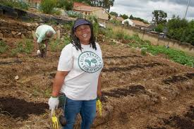

Food insecurity is a state where individuals or households lack reliable access to food with enough nutrition to meet their daily needs.
Our group developed a website to present our research on food security, with a focus on how food gardening can help communities like Buhle Park overcome hunger and poverty.
The site aims to share relevant and evidence-based insights gathered from both local and global sources to help achieve zero hunger and zero poverty.
Food insecurity is one of South Africa’s most pressing challenges, ranking 59th globally among affected countries. Our findings highlight several contributing factors, including:
In response, we explored the concept of food gardening as a practical and sustainable solution. Through extensive online research, we identified successful gardening projects and strategies that support our hypothesis. These findings are summarized and presented across different sections of our website using:
To showcase our proof of food gardening as a successful method to combat food security.
To enhance user engagement, we also designed a simple program that allows users to input details — such as available space or crop type — and receive calculated recommendations for starting their own garden. Through the use of coding languages such as:
This tool helps translate our research into actionable steps for real-world application.
Food security remains one of the most critical global challenges, particularly in developing countries such as South Africa. Many households face hunger and poverty due to limited access to affordable and nutritious food. The Food Security Through Garden Projects initiative aims to promote sustainable food production by encouraging communities to create, maintain, and expand food gardens.
This report demonstrates how information and communication technology (ICT) can be used to support food security. The project combines knowledge from Mathematics, Communication, Programming, and Computing Fundamentals to research, analyze, and design solutions that promote community food gardening. The group explored various community and school garden initiatives, analyzed their success factors, and developed recommendations supported by digital tools such as a website and Java-based calculations.
Many communities struggle with limited food resources, lack of income, and poor nutrition. Commercial food prices continue to rise, while access to fresh produce decreases. To achieve food security, communities need to adopt affordable, sustainable solutions. Food gardens are an effective way to provide nutritious food, generate income, and reduce dependence on external markets.
However, the lack of knowledge, tools, and technological support often limits their effectiveness. This project investigates how ICT skills—especially data analysis, programming, and web development—can enhance community garden management and sustainability.
Aim: To use ICT knowledge and digital tools to promote and support food security through community-based garden projects.
Objectives:
The group followed a structured process:
Research findings revealed that:
Digital tools such as Excel, WordPress, and Java programs can make garden management easier. By integrating ICT into gardening, communities can track growth, plan resources, and share knowledge effectively.
Mathematics provided the foundation for analyzing and managing garden resources. Through this project, students were able to:
Example:
Yield (Y) = Plants × Yield per Plant
Fertilizer per Plant = Total Fertilizer ÷ Number of Plants
These skills helped the group quantify resources and make realistic recommendations.
Communication was vital for collaboration and reporting. The group achieved:
Through this, students demonstrated leadership, listening, and presentation skills required for real-world ICT projects.
Programming enabled automation of calculations and problem solving. Students:
Example of pseudocode:
Start
Input number_of_plants
Input yield_per_plant
Compute total_yield = number_of_plants * yield_per_plant
Display total_yield
End
This demonstrated logical thinking, coding skills, and the ability to connect software with real community needs.
Computing fundamentals were applied throughout the project. Students:
These computing skills ensured that the project was technically sound, professional, and collaborative.
This project successfully combined technology and sustainability to address the challenge of food insecurity. By applying skills from Mathematics, Communication, Programming, and Computing, the group learned to analyze, calculate, and present real-world data using ICT tools.
The project demonstrates that technology can play a major role in improving community food systems and achieving the Sustainable Development Goals of No Poverty and Zero Hunger. With continued effort and collaboration, food gardens can transform communities into self-reliant, sustainable environments.
Communities across South Africa and the world face the challenges of poverty and hunger. Food gardening provides a low-cost, sustainable solution to help reduce these issues. This project explores the influence of various environmental and logistical factors on food gardening and identifies alternatives to increase effectiveness, reduce cost, and promote community involvement.
South Africa has a rich history in food gardens, considering the number of rural communities that exist in our country, which impeded the speed of urban development; thus, South Africa continues to be a developing country to date. Poverty and hunger continue to grow and become imminent in South Africa; therefore, the need to address food security and the promotion of sustainable practices is vital.
Our main objective in this project was to retrieve information about food garden cases in relation to how different types of households, educational institutions, and social responsibility community projects engage in food security through creating, maintaining, and improving gardening environments that produce fruits and vegetables.
In our project aims, we had planned to lay out existing food gardens in South Africa in order to gather key aspects of gardening practices.
The garden’s extensive role in social well-being, food security, economic and environmental development sustainability for a community on a large or small scale.
The garden’s imperative role is to contribute to food and nutrition security for students. This type of garden case is important because it produces educational opportunities and improves students’ relationships with fresh produce and dietary choices.
The garden’s essential role in ameliorating household food production and nutrition. The exploration of challenges such as access to land and education levels hindering this type of case is also assessed.
Light From Africa operates Community Food Gardens in Suurbraak, Barrydale, and Buffeljags River to assist residents in supporting themselves by growing vegetables and developing skills to earn a living.
3 Communities | 245 Households | 1060 Residents | 3 Schools | 530 Learners
Develops income-producing vegetable production initiatives suited to the South African landscape, including the Market Garden program that promotes community food gardens and smallholder farming using eco-friendly methods.
Located in Centurion, Gauteng, this project by Ditshego House of Laughter supports 250 children in the Mooiplaas community, promoting health, unity, and self-reliance through shared food production.
Established by Exxaro in Mpumalanga to create new livelihoods for resettled households. Equipped with greenhouses and drip irrigation systems, it supplies local feeding schemes and retail stores.
Encouraging indigenous planting ensures resilience to climate change and supports biodiversity. Access to indigenous seeds and soil enhancers is vital.
Providing easy-to-use kits with simple instructions empowers individuals to start and maintain home or community gardens.
Introducing drip irrigation, soaker hoses, and self-watering containers ensures plants get adequate water while conserving resources.
| Variable/Parameter | Description |
|---|---|
| Number of Participants (P) | People involved in the gardening project |
| Garden Space (S) | Total area available for planting (m²) |
| Water Availability (W) | Amount of water available per week (litres) |
| Sunlight Exposure (Sh) | Average hours of sunlight per day |
| Soil Type (T) | Type of soil used (loam, clay, sandy) |
| Total Cost (C) | Setup and ongoing costs in ZAR |
| Fertiliser Requirement (F) | Fertiliser needed per square meter |
| Pest Control Method (Pc) | 1 = organic/natural, 0 = chemical |
| Recyclable Resources Used (R) | Use of recycled containers or compost |
| Estimated Yield (Y) | Projected harvest output (kg or number of plants) |
A community-driven initiative enhancing food security and promoting sustainable gardening practices. This garden in Khayelitsha focuses on improving food access and soil quality through community collaboration, showcasing the impact of urban food gardening on local food security. The Khayelitsha garden demonstrates how community gardens can unite people to improve food security and gardening skills in urban settings.
The prevalence of food insecurity is not only a matter of hunger but also of malnutrition, as households often rely on cheaper, calorie-dense foods that lack essential nutrients. Sustainable, community-driven solutions such as community garden projects strengthen local food systems, provide fresh produce, and foster environmental and economic resilience.
Supplement household diets and reduce grocery costs.
Integrate agricultural education into curricula and provide meals for learners.
Multiple households share land and resources to produce food collectively.
Convert unused spaces into productive gardens, often linked with local markets.
Case studies from Gauteng, KwaZulu-Natal, and Limpopo highlight measurable benefits, though challenges remain—land disputes, water scarcity, limited agricultural inputs, and lack of training.
This research explores the relationship between food security and community gardening in South Africa and presents recommendations for scaling up garden projects nationwide. These initiatives promote self-reliance, resilience, and sustainable livelihoods.
According to Statistics South Africa (2023), nearly 19.7% of South African households experience moderate to severe food insecurity. This means approximately 3.5 million households face challenges accessing sufficient, nutritious food, and around 6.2 million individuals regularly go without adequate meals.
Community and school gardens play a vital role in addressing these challenges. Data from the Food & Trees for Africa (2024) report shows that over 1,200 active gardens nationwide now support more than 45,000 households and 250 schools. Each community garden produces on average 120–180 kilograms of vegetables per month, helping reduce food expenses by up to 30% per household.
In areas such as Buhle Park, Soweto, and Khayelitsha, garden cooperatives have increased local vegetable supply by an estimated 40%. Studies indicate that 65% of participating families report better nutrition and health, and 25% of gardens generate small income streams through local produce sales.
Environmental benefits are equally significant — community gardens improve soil quality, reduce waste through composting, and lower carbon emissions. For every 10m² of garden space, about 6 kg of organic waste is diverted from landfill monthly.
These statistics demonstrate how small-scale food gardens strengthen community resilience, create employment opportunities, and support the UN Sustainable Development Goals (SDGs): No Poverty (SDG 1) and Zero Hunger (SDG 2).
| Indicator | Value (2023–2025) | Source |
|---|---|---|
| Households facing food insecurity | 19.7% | Stats SA, 2023 |
| Active community gardens nationwide | 1,200+ | Food & Trees for Africa, 2024 |
| Average monthly yield per garden | 120–180 kg | FTFA Reports, 2024 |
| Reduction in food expenses per household | Up to 30% | Community Monitors, 2024 |
| Families reporting improved nutrition | 65% | UN Food Security Review, 2024 |
Enter your data below to calculate garden yield, water use, and other parameters.
| Parameter | Symbol | Value | Unit |
|---|---|---|---|
| Garden Space | S | m² | |
| Plant Density | D | plants/m² | |
| Water per Plant | W/p | litres/week | |
| Fertilizer Rate | F | kg/m² | |
| Yield per Plant | Y/p | kg | |
| Tool Cost | C_tools | R | |
| Soil Cost | C_soil | R | |
| Seed Cost | C_seeds | R | |
| Water Cost | C_water | R | |
| Fertilizer Cost | C_fertilizer | R |
A. Number of Plants (N) = 0
B. Total Water (W) = 0 litres/week
C. Total Fertilizer = 0 kg
D. Total Cost = R0
E. Total Yield (Y) = 0 kg